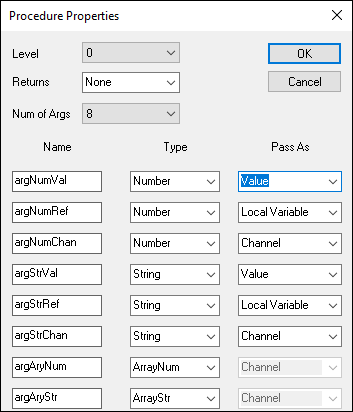

iTest User's Guide
Argument Types
| Type | VCL Keyword | Description |
| Numeric | Number | Declares that the function is expecting a numeric type for this argument. |
| String | String | Declares that the function is expecting a string type for this argument. |
| Numeric Array | ArrayNum | Declares that the function is expecting a numeric (Virtual output) array type for this argument. This can only be passed as a Channel type. |
| String Array | ArrayStr | Declares that the function is expecting a string array type for this argument. This can only be passed as a Channel type. |
When you are writing VCL functions and declaring arguments for those functions, you have to declare the argument types. This section describes the available argument types.
Argument Pass-As Types
| Type | VCL Keyword | Description |
| Value | ByVal | Passes constants, channel names or local variables whose values can be changed in the function, but changes are not reflected in the calling function. Only the current value of the argument is passed. |
| Local Variable | ByRef | Passes local variables. Changes to a Local Variable reference argument are reflected in the calling function. This is equivalent to passing a pointer to a local variable. Note that you cannot pass a local variable when Spawning VCL functions. Local variables exist only for the length of time that the calling function exists. When a function spawns another function, it is impossible to know how long the calling function will exist and therefore it is impossible to guarantee the scope of the local variables passed to it. The SEQUENCE START data_engine mailslot message will handle ByRef like a ByVal argument, since due to the way the message is parsed, it will not update the local variable in the calling procedure. |
| Channel | ChanName | Passes iTest channel names by reference. The current value of the iTest channel along with underlying channel information is available inside the scope of a called function. Changes to a Channel argument are reflected in the calling function. Channel types are exactly the same as Local Variable, except that it passes an iTest channel name instead of a local variable. |
Test Manager VCL Procedure Properties Window
